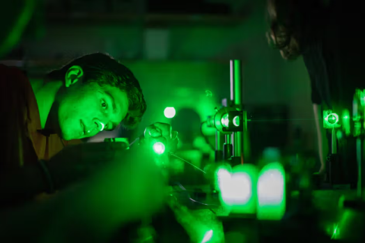
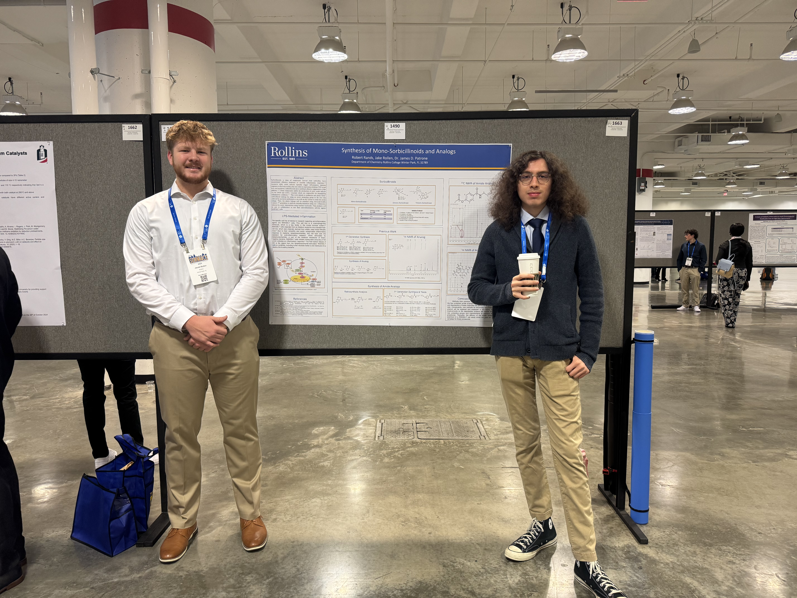
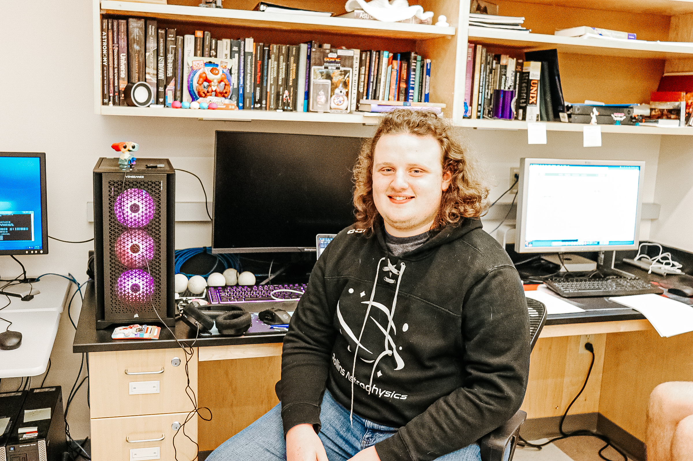
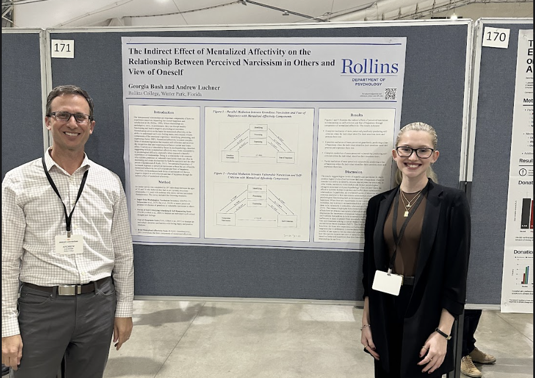

The Collaborative Research Fellowship (CRF) offers a paid opportunity for students to experience important, high impact research while earning their undergraduate degree. Students work with a faculty member to design, execute, and present scholarly research over the course of 6 to 8 weeks. The CRF program allows students to engage with their field on a deeper level, and can open doors to conferences, future jobs, and connections within their field.

CRF Administrator, Department Chair of Physics
Dr. Christopher Fuse is a computational astrophysicist who has been teaching for over 20 years. When not leading the Collaborative Research Fellowship, Dr. Fuse conducts research regarding planetary development, galaxy formation, and X-ray imaging.
CRF Administrator, Department Chair of Chemistry
Dr. James Patrone has been a professor at Rollins College for nearly 10 years and is currently the Department Chair of Chemistry. During that time he has conducted research in ligand discovery and cancer-related processes.
The CRF program provides students a chance to develop valuable skills in their field. Students are required to develop a research proposal, during which they will learn how to identify needs in their field and develop a plan to fulfill them. Students will additionally gain hands-on-experience in conducting research, preparing them for future endeavors in whatever field they choose to enter. Finally, the CRF program strives to provide students the chance to interact with their chosen field through publications, conferences, and formal presentations, encouraging students to make connections that can aid them in their career.
Jake Rollen is a junior who worked in a chemistry lab with Dr. Patrone and fellow researcher Robert Rands. His research focused on finding methods to efficiently synthesize sorbicillinoids, compounds that have the potential to be anti-inflammatory. His research experience functioned like a typical 9-5 laboratory job, working to test and analyze different methods.

Shyhiem Walker is a senior who worked with Dr. Guerrier from the biology department. His research consisted of working to mark tetrahymena thropolum, a species of single cell lifeforms, with a genetic marker called mCherry. Specifically he focused on marking a part of the cells to help make testing and identifying cells more efficient and accurate.
Paloma Kluger is a senior completing a double major in English and Sociology. During the summer of 2024, Paloma worked with Dr. Reich of the English department to research how memoirs tackle guilt, grief, responsibility, and blame. They focused on two memoirs, In the Dream House by Carmen Maria Machado and Memorial Drive: A Daughter’s Memoir by Natasha Trethewey, and examined how the memoirs navigated abuse, discrimination, and hardships from the authors’ lives.
Quin Fuse's research focused on exploring the molecular evolution aspect of exoplanetary systems using N-body simulations. Their research experience looked different to most, due to it being completely computational. The vast majority of their research was sitting in front of code and editing it, then analyzing those simulations. It was a lot of work, but Quinn statest hat it was also incredibly rewarding.

Georgia Bush is a psychology major whose research focused on emotional regulation and how it affects us and our interpersonal relationships. During her research she would meet weekly with Dr. Luchner of the psychology department where they would establish what needed to be completed each week. Georgia was most surprised by how much independence you can get in research, and how that often comes with learning how to adapt to challenges.

Olivia Prelog is a rising senior who worked with Dr. Brannock from the Marine Biology department. Together, they looked at blue mussel species Dr. Brannock had collected in 2008 from Hokkaido, Japan. This region has a higher sea surface temperature than other areas, and so their research focused on population genetic dynamics around that region within blue mussle species.
The CRF program is possible due to generosity from Rollins College donors. Your gifts help to provide research equipment, spaces, and conference opportunities for students to help expand their various fields.

Office of Admission
1000 Holt Ave. - 2720
Winter Park, FL 32789
407-646-2161